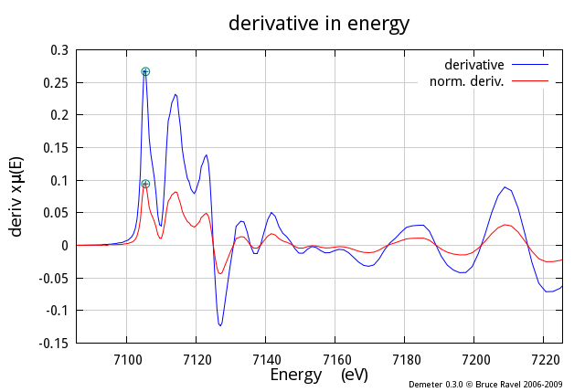
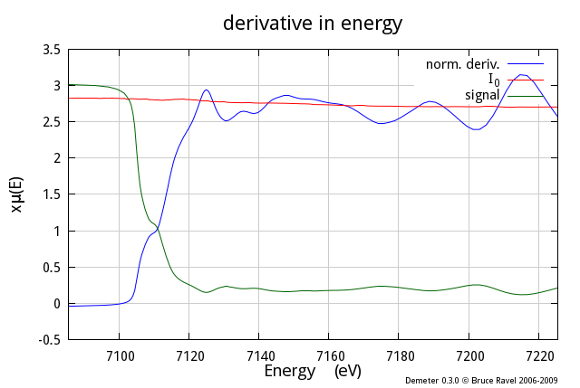
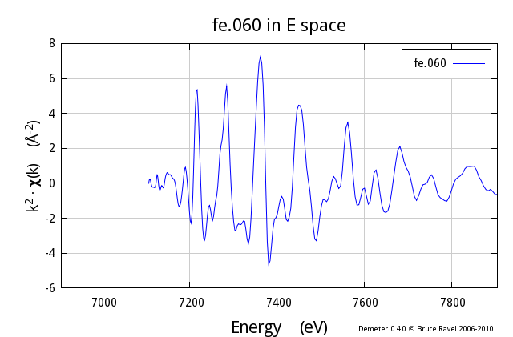
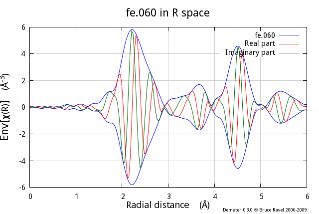

The Plot object is used to control the details of how plots are made
and displayed by DEMETER programs. It is useful to consider how
ATHENA works in order to understand the relationship of the Plot
object to the rest of DEMETER. In ATHENA, the plot
controls are separate from the controls for the parameters of any
individual data set. For example, the range over which data are
plotted in energy or R-space is, in some, sense, a global parameter
not associated with a particular data set. The Plot object serves
this role. The details of the plot in DEMETER are global. To
plot a plottable object (Data, Path, or any of the Path-like objects),
DEMETER consults the Plot object for those details.
To make the Plot object readily accessible at all times in your
program, the po method is a method of the
base class and is inherited by all DEMETER objects. Thus, given
any object, you can “find” the Plot object
like so:
$the_plot_object = $any_object -> po;
Any method of the plot object is easily called by chaining with the
po method. For example to start a new
plot (as opposed to overplotting), you do this
$any_object -> po -> start_plot;
The start_plot method reinitializes the
Plot object to begin a new plot. Along with clearing the plotting
display, this restarts the trace colors and resets the plot title.
Plotting in energy
Data, background, pre-edge, & post-edge
- my @eplot = (e_mu => 1, e_bkg => 1,
- e_norm => 0, e_der => 0,
- e_pre => 1, e_post => 1,
- e_i0 => 0, e_signal => 0,
- e_markers => 1,
- emin => -200, emax => 2000,
- space => 'E',
- );
- $data -> po -> set(@eplot);
- $data -> po -> start_plot;
- $data -> plot;
|
This example demonstrates the common and useful plot showing the data
along with the background function and the regressed polynomials used
to normalize the data. Note that the Plot object has a number of
boolean attributes which turn features of the energy plot on and off.
Also note that the range of the plot is set by
the values of the emin and
emax attributes of the Plot object.
Also note that, as was discussed in
the chapter on the Data object,
there is no need to explicitly perform the data normalization or
background removal. DEMETER knows what needs to be done to
bring the data up to date for plotting and will perform all necessary
chores before actually generating the plot. This allows you to focus
on what you need to accomplish.
|

|
One final point about this example. I have created the
@eplot
array to hold the attributes of the Plot object. I then pass that
array as the argument of the set method of
the Plot object. Those attributes could be listed as explicit
arguments of the set method. As always in
perl,
there's more than one way to do it.
Normalized data & background
- my @eplot = (e_mu => 1, e_bkg => 1,
- e_norm => 1, e_der => 0,
- e_pre => 0, e_post => 0,
- e_i0 => 0, e_signal => 0,
- e_markers => 1,
- emin => -200, emax => 2000,
- space => 'E',
- );
- $data -> po -> set(@eplot);
- $data -> bkg_flatten(0);
- $data -> po -> start_plot;
- $data -> plot;
|
This example shows how to plot data and background function after
normalization.
|

|
Flattened data & background
- my @eplot = (e_mu => 1, e_bkg => 1,
- e_norm => 1, e_der => 0,
- e_pre => 0, e_post => 0,
- e_i0 => 0, e_signal => 0,
- e_markers => 1,
- emin => -200, emax => 2000,
- space => 'E',
- );
- $data -> po -> set(@eplot);
- $data -> bkg_flatten(1);
- $data -> po -> start_plot;
- $data -> plot;
|
This example shows how to plot the flattened data and background
function, that is, the normalized data with the difference in slope
and quadrature between the pre- and post-edge lines subtracted out
after the edge. Note that the switch for turning flattening on and
off is an attribute of the Data object
not the Plot object. This allows the option
of overplotting one data set that is normalized with another that is
flattened.
|

|
Derivative of mu
- my @eplot = (e_mu => 1, e_bkg => 0,
- e_norm => 0, e_der => 1,
- e_pre => 0, e_post => 0,
- e_i0 => 0, e_signal => 0,
- e_markers => 0,
- emin => -20, emax => 120,
- space => 'E',
- );
- $data -> po -> start_plot;
- $data -> set(name=>'derivative') -> plot;
- $data -> po -> e_norm(1);
- $data -> set(name=>'norm. deriv.') -> plot;
|
This example shows two interesting features we haven't yet seen. This
shows how things get overplotted, in this case the derivative of
μ(E) and the derivative of normalized μ(E) . The overplotting
happens simply by calling the plot mthod a
second time without calling start_plot.
In this way, any number of things can be overplotted.
Also note the use of chained method calls to set the Data object's
name attribute appropriately before
plotting. The name method always returns
the object that called it, which allows for this sort of chaining
magic to happen. There is no advantage to chained method calls -- you
could rename the Data object and then plot it in the subsequent line.
The cahined calls are a bit more concise.
|

|
Data, I0 channel, & signal channel
- my @eplot = (e_mu => 1, e_bkg => 0,
- e_norm => 0, e_der => 0,
- e_pre => 0, e_post => 0,
- e_i0 => 1, e_signal => 1,
- e_markers => 0,
- emin => -20, emax => 120,
- space => 'E',
- );
- $data -> po -> start_plot;
- $data -> plot;
|
DEMETER saves arrays containing I₀ and the signal
channel, which can then be plotted along with the data.
DEMETER takes care to scale these arrays so that they plot
nicely with the data.
|

|
Data at two different edges with E0 subtracted
- my @common = (bkg_rbkg => 1.5,
- bkg_spl1 => 0, bkg_spl2 => 18,
- bkg_nor2 => 1800,
- bkg_flatten => 1,
- );
- my @data = (Demeter::Data -> new(),
- Demeter::Data -> new(),
- );
- foreach (@data) { $_ -> set(@common) };
- $data[0] -> set(file => "$where/data/fe.060.xmu",
- name => 'Fe 60K', );
- $data[1] -> set(file => "$where/data/cu010k.dat",
- name => 'Cu 10K', );
-
- $plot -> set(e_mu => 1, e_bkg => 0,
- e_norm => 1,
- e_pre => 0, e_post => 0,
- e_zero => 1,
- emin => -30, emax => 150,
- );
- $data[0] -> po -> start_plot;
- foreach (@data) { $_ -> plot('E') };
|
DEMETER offers an easy way to plot μ(E) data with the
E₀ value subtracted. This places the edge at 0 on the x-axis,
allowing you to overplot data from different edges. When the
e_zero attribute of the Plot object is set
to 1, each Data object's bkg_eshift
attribute is temporarily set so that the edge will show up at 0 in the
plot.
|

|
Plotting in k
Plotting in k-space
- $data -> po -> start_plot;
- $data -> po -> kweight(2);
- $data -> plot('k');
|
Again, DEMETER will take care of the background removal when you
request a plot in k-space. Note that the k-weight to use for plotting
is an attribute of the Plot object.
|

|
Plotting in chi(k) in energy
- $data -> po -> start_plot;
- $data -> po -> set(kweight=>2, chie=>1);
- $data -> plot('k');
|
Here the x-axis of the χ(k) plot has been converted to absolute
energy.
|

|
k-space with all three k-weights
- $data -> po -> start_plot;
- $data -> plot('k123');
|
DEMETER has several types of interesting, pre-defined plots.
One of these, the “k123 plot”, will overplot
the data three times, once each with k-weight values of 1, 2, and 3.
The copy of the data with k-weight of two is plotted normally. The
other two copies are scaled up or down to be about the same size as
the k-weight of 2 copy. The data are analyzed and the scaling and
offset constents are chosen to be apprporiate to the data.
|

|
Plotting in R
Magnitude in R-space & R-space window
- $data -> po -> set(kweight => 2, r_pl => 'm', space => 'r', );
- $data -> po -> start_plot;
- $data -> plot -> plot_window;
|
This example shows a common kind of plot, χ(R) data with the
back-Transform windowsing function, which is also used by
DEMETER as the fitting range when a fit is evaluated in R-space.
The r_pl attribute of the Plot object is
set to m, indicating that the magnitude of
χ(R) should be plotted.
Note that the plot_window method was
indicated in a chained method call. This is not required, but is
possible because the plot method returns
the calling object.
The plot_window method observes the value
of the Plot object's space attribute.
That is, if the plot s being made in k or q, the k-space window will
be plotted. If the plot is being made in R, the R-space window will
be plotted.
|

|
Data in R-space as envelope, real part, & imaginary part
- $data -> po -> set(kweight => 2, r_pl => 'e', space => 'r');
- $data -> po -> start_plot;
- $data -> plot;
-
- $data -> set(name=>'Real part');
- $data -> po -> set(r_pl => 'r', );
- $data -> plot;
-
- $data -> set(name=>'Imaginary part');
- $data -> po->set(r_pl => 'i', );
- $data -> plot;
|
Multiple parts of the complex χ(k) are overplotted by
repeatedly plotting data in R-space without calling the
start_plot method. The value of
r_pl is set between each part of the
plot. Note that the “envelope” is the
magnitude plotted twice, once multiplied by -1.
|

|
R-space
with all three k-weights
- $data -> po -> start_plot;
- $data -> plot('r123');
|
The “R123 plot” is the second of the
pre-packaged specialty plot types. This one, is just like the k123
plot in that three copies of the data are overplotted using each of
the three k-weights with scaling and offset computed automatically.
This R123 plot was plotted as the magnitude of χ(R) . The R123
plot respects the value of the r_pl
attribute of the Plot object.
|

|
Magnitude and real
part in R space
- $data -> po -> start_plot;
- $data -> po -> kweight(2);
- $data -> plot('rmr');
|
The “Rmr plot” is the third of the
pre-packaged specialty plot types. This one plots the magnitude and
real part of χ(R) with an appropriate offset between them. This
is the default plot type made after a fit finishes. In that case, the
data and fit are overplotted as magnitude and real.
|

|
Plotting in q
Plotting in back-transform k-space
- $data -> po -> set(kweight => 2, q_pl => 'r');
- $data -> po -> start_plot;
- $data -> plot('q');
|
Plotting the back-transformed χ(q) is specified by plotting in
“q”. The part of the complex χ(q) is
specified using the q_pl attribute of the
Plot object.
|

|
k-space & the real part of back-transform k-space
- $data -> po -> start_plot;
- $data -> po -> kweight(2);
- $data -> plot('kq');
|
The final specialty plot type in DEMETER is the
“kq plot”. This overplots χ(k) with
the real part of χ(q) .
|

|
![[Demeter logo]](../../images/Isis-Sothis-Demeter_sm.jpg)